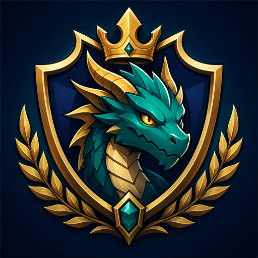

About
概要
Sugiworks is a one-person studio that designs, programs and ships games independently. Our first title, Monster Club League Manager, is a single-player club management sim coming to Steam.
Sugiworksは、企画・プログラム・リリースまでを1人で行う個人開発スタジオです。第1作『Monster Club League Manager』はSteamで発売予定のシングルプレイ向けクラブ運営シミュレーションです。
Games
作品

Contact
お問い合わせ
For press, review keys, streaming or business inquiries: sugiworks.games@gmail.com
取材・レビューキー・配信・ビジネスのお問い合わせ：sugiworks.games@gmail.com